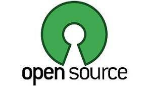

Código abierto

- Modelo de desarrollo de software basado en la colaboración abierta.
- Acceso al código fuente
- Beneficios en cuestiones éticas y de libertad que se destacan en el software libre.
El termino “libre” normalmente se entiende como el hecho de adquirir un software de manera gratuita. En realidad se trata de abaratar costos y ampliar la participación.
Que sea libre no significa necesariamente que sea gratis